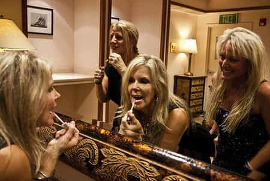
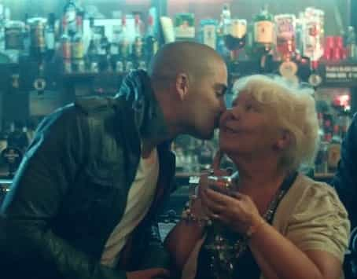

< < < Back
Unmarried Older Women Need To Go Away – Return Of Kings
Sex and the City’s début was in 1998 and aired its last episode in 2004. The show was a life affirming series about four mid-30’s sluts with no worries or responsibilities banging their way across New York City. It portrayed women as being able to screw around, be callous to men, show no respect for society and still have it all in the end – marriage, family, riches, the whole happy sunset that women don’t realize they want until the wrinkles and sagging skin gained from a decade of non-stop partying start making them look like Fagin from Oliver Twist.
Women at the time gobbled the show up, imitating the fantasy on screen as if doing so in real life had no consequences. And why shouldn’t they have? They were young(ish), gloriously single, living in a society feminized through and through. Sure, their hippie mom’s got to be rampaging sluts and married to good men by the time they were 26 but the professional women of the early 2000’s knew that their prince charming was going to be waiting for them in a few years once they were ‘ready’ (no longer attracting studs) to ‘settle down’ (find a schmuck to permanently pay for their meals and student debt). So what if they were unmarried or *GASP* even single at 26? In 1998, 26 was the new 16. Their whole lives were ahead of them and everything was going to go according their schedules. After all, Carrie and the other Sluts in the City (god I’m clever) showed them that women in their mid to late 30s were living like the 18 year olds at heart they all they wished they still looked like. To them, there was no rush. These women were forever young.
Flash forward to 2014. All those 26 year olds who watched and mimicked Carrie’s lifestyle are now 42. Since 1998 many of them have gotten married, had 1.7 kids, dropped out of the career game like all women want to. Notice I said many and not all. I say not all because a good chunk of them are still living the exact same way they did back in their early 20’s.
Of course, Sex And The City can’t be single handedly blamed for these women’s terrible life choices. They were already living like Carrie; she just happened to be a faddish pop culture icon for them to muster around.
My generation (Millennial) often gets labelled as having a kind of Peter Pan Syndrome, where we are refusing to grow up; which, I admit, applies to a lot of us. It’s a bit hypocritical to label the Millennial generation as living in Never Never Land, however, when young 20 somethings go to the club and see women aged 30+ in leggings or mini-skirts unironically bobbing their heads and singing along to Fun’s ‘We Are Young.’

“Tonighttt we are youuungggg” Born in 1958
If we young men are Peter Pan then these old bags are Captain Hook trying to tie us up and carry off in their gross, diseased, poorly shaven, wart encrusted, scar riddled pirate ship. And because they’ve grown up being told how awesome they are, how they deserve everything, these cougars are shameless in their behaviour.
Last summer I went to a club with a girl I was banging. She wound up in the bathroom comforting her crying friend for a good chunk of the night. I went to wait at nearby shooter bar and was thinking about every single outcome of what would happen if I manned up and tried to hit up that cute brunette a few spaces down from me when suddenly a cougar came shuffling out of the crowd and grinded my knee practically all the way up into her never used womb while shouting in my ear, “What are we drinking cutie?!”
In real life I’m actually fairly nice, so I spared her rejection with a lie, telling her that, “I’m here with my fiancée,” instead of laughing her wrinkly, deluded ass away from me as I should have. Hopefully her thinking that a young guy like me was getting married to some smart young woman really brought her down but I wish I had had the balls to say what I was really thinking: Jesus Christ lady, when my mom was your age I was eight.
It’s no secret that a woman unmarried over 30 has something wrong with her and is a bad life investment – widows and recently reawakened coma victims excluded obviously – but these parodies of pride haven’t gotten that memo. Perhaps they’ve heard how men in their 30’s and 40’s can still attract young lovers and think that somehow they get the same deal. Perhaps they actually have no idea just how unappealing and repulsive they are to any man with any option.
What would you take; left or right?
So why didn’t many of these once youthful hoebags wind up married? Because when they were young and able to attract men they refused to wife up. And why wouldn’t they? They were hot, young and tight and gave zero shits about their future; after all, the party lasts forever right? What young woman wants to do something as dull as starting a strong, loving family when she can spend her 20’s having such adventures as taking some ecstasy at an outdoor rock concert and blowing a stranger behind the port-o-potties instead? These young sluts were on top of a world that catered to them.
But when your life revolves around being a slut, the world only caters to you if you’re a young slut. And many of these women haven’t been young for a decade. It used to be that slutty women could bang away their 20’s and still find a decent guy with a good job and strong family ethics – who they could then divorce after a decade once the house was paid off and the kids were old enough to look after themselves; not effectively of course but for the most part mommy didn’t need to keep her eye on an 11 year old all day and as a hot recently divorced milf on the prowl she really needed those worry free mornings to sleep the hangover off.
Well those times are disappearing. Nothing stays the same, a lesson today’s older whores are learning much to their detriment and teeth gnashing. Men are wising up; whether through gleaning knowledge from the internet, learning it through anecdotes from their friends or simply stumbling upon the truth themselves. More and more men are discovering the fundamental truth: unmarried women past 30 are bizarre. They’re damaged goods. They are not worth any effort or attention what so ever.
Meeting a woman after she’s 30 and deciding to marry her is like betting everything on black at a roulette table with thirty-five red spaces – and even if you hit black it only pays out 5% of your bet. They’ll very likely use the foolish man who peruses their sloppy beef curtains for all the money they can dig up and then toss his ass out on the curb for the most frivolous of reasons.
Of course having grown up privileged and been told they could have it all these old sacks that aren’t getting it all are turning around and blaming themselves and their own selfish life choices because they’re responsible adults who are nearing their middle age. PSYCH. They say its men’s fault. What else is new?
OLDER WOMEN ARE INVISIBLE. OLDER WOMEN IGNORED BY SOCIETY. OLDER WOMEN UNLUCKY IN LOVE.
Even casual internet users have invariably stumbled on a heading like that, or read a complaint in comment sections involving a similar theme.
When I first clicked on a link about so called invisible women you can easily imagine my disappointment in discovering the article was not about chicks gaining see-through super powers but rather a bunch of 30 something’s complaining about how hard it is to be 30+ and single.
The Real Invisible Woman
They moaned about how older women are invisible to society nowadays. Apparently men ignore them and the older women like them; they no longer hold open the door or chat them up in line at Starbucks or get down on their knees to bag them for dates. Suddenly, now that these women are ‘ready’ to start a family, all the good men are mysteriously gone; taken they say, or chasing younger women or marrying foreign women or refusing to grow up – which actually means he would rather play with his toys by himself then pay for hers and watch her play with them.
If ever questioned about why they think their male peers, men in their 30s or 40s, are choosing foreign women over them the ‘invisible’ woman usually rants about mail order bride rape or how ‘creepy’ older men just want young women as their ‘slaves’ to cook and clean for them. And if pressed about the older man/younger woman dynamic there’s always a teary gaze of nostalgia as she remembers her sugar daddy days – then she shakes her head and says that all young girls are sluts (her, just fifteen years younger) who give sex up with no commitments so why should older men bother dating all those totally mature and experienced women their own age?
Absolutely heart breaking right? Yet there’s never any serious (mainstream) investigation to why these women are single into their 30s and beyond. I guess it’s just easier for these women to say that men suck and it’s our fault rather than take a good, long look in their mirrors. In their defense, perhaps even they can’t stand to look at their sagging, party aged faces – the men they lust after certainly can’t.
Unfortunately these vaginal fossils can’t actually just acknowledge their terrible choices and go gently into that good night of post whore spinsterdom. No, we’re already hearing all about their problems and this trend will only increase as more of today’s media savvy sluts grow old and alone. Much like the heroic single mom, social media is slowly beginning to fill up with the ‘tragedies’ of older women with no children and of those who refused to get married within a reasonable amount of time who now find themselves without anyone choosing them as the consolation prize. And of course it’s all men’s fault, those selfish pricks.
The cougar movements have already begun. Female centered television networks (which includes pretty much all of them) run reality and scripted shows about how awesome cougars and older Sex and the City types are. Others are desperately trying to create a social stigma that young men should get involved with older women and older men should cease pursuing younger women. So on the one hand we have older women complaining incessantly about there being no good men; then we have countless articles like these (1, 2, 3) written in the tone that young men dating older women is not only the norm, but that it’s so common that 30+ women should actually consider the pros and cons of whether or not to date younger men! Like they actually have a choice!
As they’re charging head first off the precipice today’s older women still have to rationalize their minds into thinking they’re somehow in control, even as the reality of the weird young men who actually do date older women is quite different.
Knights do not fight for the love of Queens – they fight for Princesses. No man of sound mind and worth ever dreams of starting a fairy tale life with a woman over 30. There is no reason for today’s women to leave her 20s unmarried; they are ‘victims’ of their own greed, short-sightedness and selfishness. Their frivolously divorcing sisters out on the prowl are just as repugnant.
For women, 26 is not the new 16; 30 is not the new 18; 40 is not the new 20. A woman’s peak beauty and attractiveness has a short lived shelf life and if she chooses to ignore the expiry date then to hell with ‘em. There’s a lot more for men to feel guilty about in this world then the stink coming from some expired slut meat. All these complaining older women need to actually become invisible and disappear from society. At least their younger sisters who are complaining have the benefit of still being bangable. Women over 30 trying to date suck, and they make everywhere they go suck. They need to scurry through the super market and buy their cat food quickly – and not try to start up a conversation with us young men in the checkout line; we respond to your questions because we’re being nice, not because we’re interested in you. Please leave us be while we admire dat ass on the 18 year old checkout girl.
Oh, and to all you cougars out there – stay out of the clubs. You’re embarrassing everyone in there, especially yourself.

“I really don’t understand this We Are Jung song. I met Carl back when I was in university, he was a very odd man – heck of a package though, tickled my tonsils…wazzat? Do I want to have some coke with you in the men’s room? But I already got a coke in my hand!”
Read More: What Happened To Ashley


{kind=link}
{kind=link}
{kind=link}
{kind=link}
{kind=link}
{kind=link}